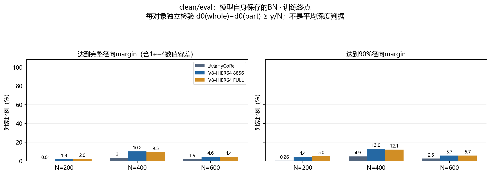
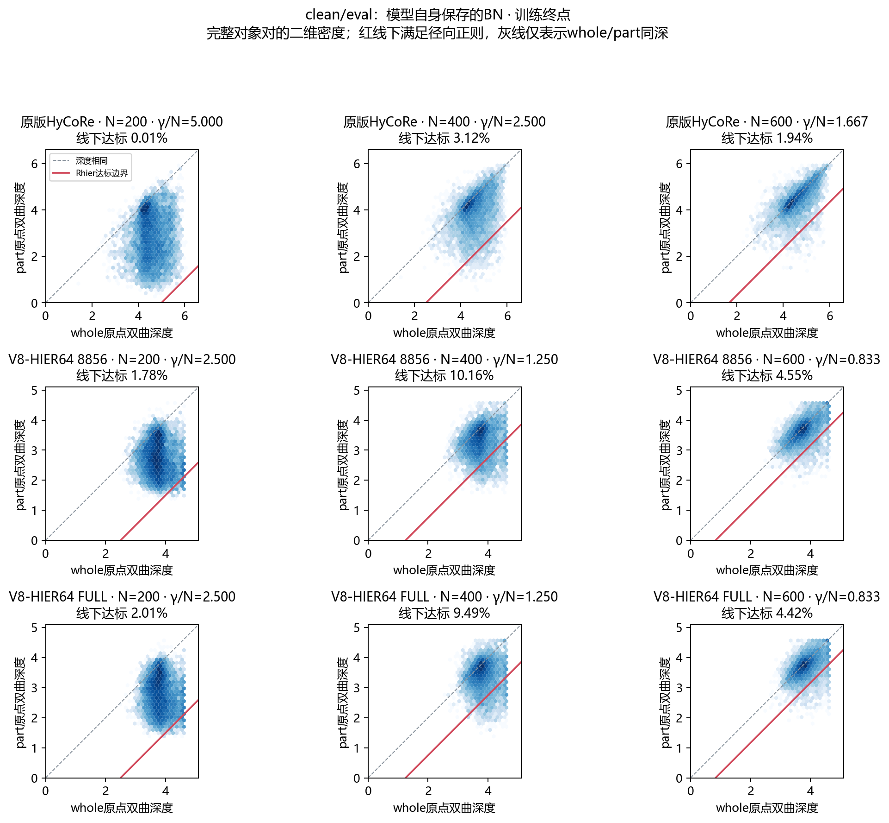
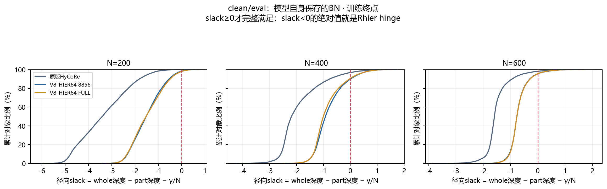
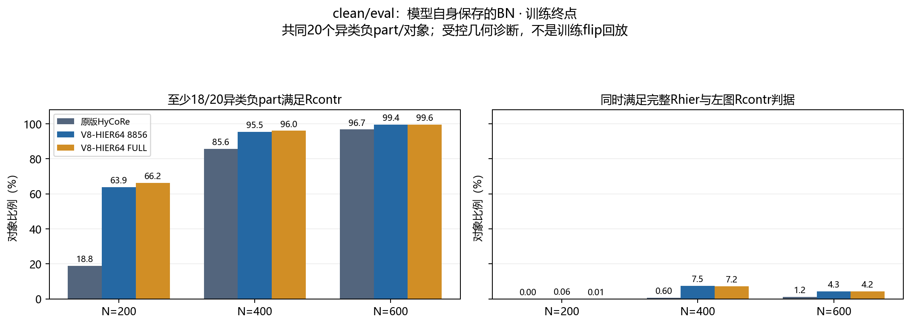

冻结训练集审查 · Markdown互动版 · 完整密度统计
whole–part逐对象间隔审查：V8与原版HyCoRe
日期：2026-10-19。比较原版HyCoRe、此前8856/984协议的V8-HIER64，以及最近FULL9840重跑的V8-HIER64；每版都检查预先确定的best和300轮终点。原版epoch沿用0起编号229/299，V8为已完成轮次；8856协议best为221，FULL9840 best为297。
本报告回答的是：每个对象的whole与对应part是否达到正则项设计的间隔。全部模型使用相同8856个训练对象，N=200/400/600分别统计，不用两个平均深度的差代替逐对象验收。分类成绩不用于选择诊断条件，也没有新增test前向。
核心判断：超参数已按500/N、2正确实现，但clean/eval下只有少数对象兑现完整径向间隔；原版1000/N同样不是普遍兑现的硬约束。 放宽到90%目标也不改变这一总体判断。当前批BN显著改善V8的N400间隔，N600则因part自身也靠近cap而仍很差，不能把whole成壳当成整个intra结构修复成功。
1. 代码中的设计究竟要求什么
径向项要求whole比part更深，且间隔达到一个下界，不要求恰好等于margin：
$$
g_i=d_0(w_i)-d_0(p_i),\qquad
R_{\mathrm{hier},i}=\max\left(\frac{\gamma}{N}-g_i,0\right).
$$
对比项则使用whole到正、负part的双曲距离：
$$
h_{ij}=d(w_i,p_j)-d(w_i,p_i),\qquad
R_{\mathrm{contr},ij}=\max(\delta-h_{ij},0).
$$
| 模型 |
曲率c |
gamma |
N=200径向下界 |
N=400 |
N=600 |
对比距离差下界delta |
| 原版HyCoRe |
1 |
1000 |
5 |
2.5 |
1.6667 |
4 |
| 两版V8-HIER64 |
.1 |
500 |
2.5 |
1.25 |
.8333 |
2 |
N是part实际点数，不是whole点数，也不是裁剪函数返回的k−1。Rcontr不能用原点深度差判断。实际训练负part来自batch内part.flip；原版是local32，V8在global64 gather后flip。CE与两项intra联合反向，intra系数各.01；这些是软损失，没有保证每个样本都满足的投影或硬约束。
代码依据：原版裁剪及损失、原版训练调用、V8径向/对比目标。
2. “符合”采用什么判据
- 完整达标：g达到gamma/N，允许1e−4双曲距离的数值容差；另保存完全无容差的计数。
- 基本达标：g至少达到90%的目标margin。这是本报告显式定义的宽松诊断，不是论文新增目标。
- 仅顺序正确：g>0，whole确实比part深。它远弱于完整margin达标。
- 对比项：每对象取20个不同的异类负part，所有模型共享负对象，统计每对达标率，以及至少18/20对达标的对象比例。联合达标要求完整Rhier且满足该Rcontr对象判据。
最后一项是受控负样本几何诊断，不是历史训练batch.flip回放，不能称为真实训练Rcontr合规率。
3. clean/eval：逐对象完整Rhier达标率
输入为原始first1024点、无增强、不覆盖whole，模型使用自己保存的eval BN。每对象用一个固定均匀随机中心，构造同中心嵌套200/400/600近邻part。原版既有完整缓存复用，旧ID已按HDF5文件名和行号转为canonical ID；V8使用完全相同的对象与中心重新前向。另由服务器CPU独立重算全9840历史part索引，核对三个N历史SHA，再验证canonical8856索引与GPU实际索引逐元素相同，见历史索引强验证。

| 模型及权重 |
N200完整达标 |
N400完整达标 |
N600完整达标 |
三个N均达标 |
| 原版HyCoRe best（原epoch 229（0起）） |
6/8856（0.07%） |
534/8856（6.03%） |
321/8856（3.62%） |
0.01% |
| V8-HIER64 8856 best（e221） |
327/8856（3.69%） |
1381/8856（15.59%） |
746/8856（8.42%） |
1.21% |
| V8-HIER64 FULL best（e297） |
223/8856（2.52%） |
1107/8856（12.50%） |
445/8856（5.02%） |
0.61% |
| 原版HyCoRe last（原epoch 299（0起）） |
1/8856（0.01%） |
276/8856（3.12%） |
172/8856（1.94%） |
0.00% |
| V8-HIER64 8856 last（e300） |
158/8856（1.78%） |
900/8856（10.16%） |
403/8856（4.55%） |
0.51% |
| V8-HIER64 FULL last（e300） |
178/8856（2.01%） |
840/8856（9.49%） |
391/8856（4.42%） |
0.52% |
三个N均达标指同一对象的三个固定part全部通过，不是把三个N的分母混在一起；它也不代表所有200–600点数或所有随机中心都通过。
基本达到90%目标margin
| 模型及权重 |
N200 |
N400 |
N600 |
| 原版HyCoRe best（原epoch 229（0起）） |
0.56% |
8.83% |
4.58% |
| V8-HIER64 8856 best（e221） |
8.59% |
19.65% |
10.22% |
| V8-HIER64 FULL best（e297） |
6.04% |
15.70% |
6.26% |
| 原版HyCoRe last（原epoch 299（0起）） |
0.26% |
4.88% |
2.48% |
| V8-HIER64 8856 last（e300） |
4.36% |
12.95% |
5.68% |
| V8-HIER64 FULL last（e300） |
4.97% |
12.07% |
5.71% |
只看“whole更深”会得到多宽松的印象
以下均为训练终点：
| 模型终点 |
N200 whole更深 |
N400 |
N600 |
| 原版HyCoRe |
96.97% |
83.27% |
65.88% |
| V8-HIER64 8856 |
95.65% |
81.62% |
63.29% |
| V8-HIER64 FULL |
95.30% |
78.17% |
63.36% |
达到深浅顺序，不代表留出了设计的径向间隔。反过来，少量间隔不足也不能被描述成whole/part顺序完全颠倒。
4. 看清每对位置与违例幅度


slack定义为实际深度差减目标margin。图2能区分whole太浅、part太深与二者同步变化；各面板颜色为格内对象数的对数，颜色尺度独立，不用于比较面板间的计数大小。图3展示违例幅度，避免只凭达标率忽略离目标还有多远。完整分位数和hinge保存在数值表中。
5. Rcontr与两个约束同时成立的比例

以下均为训练终点。每对象20个不同异类负part；“对象通过”指至少18个满足本模型delta。
| 模型终点 |
N |
负配对达标 |
对象≥18/20达标 |
同时满足完整Rhier |
| 原版HyCoRe |
200 |
51.72% |
18.76% |
0.00% |
| 原版HyCoRe |
400 |
91.47% |
85.60% |
0.60% |
| 原版HyCoRe |
600 |
97.66% |
96.70% |
1.16% |
| V8-HIER64 8856 |
200 |
74.94% |
63.88% |
0.06% |
| V8-HIER64 8856 |
400 |
97.10% |
95.46% |
7.52% |
| V8-HIER64 8856 |
600 |
99.62% |
99.45% |
4.30% |
| V8-HIER64 FULL |
200 |
77.01% |
66.19% |
0.01% |
| V8-HIER64 FULL |
400 |
97.43% |
95.98% |
7.20% |
| V8-HIER64 FULL |
600 |
99.73% |
99.60% |
4.21% |
两版V8使用delta2，原版使用delta4。跨曲率绝对距离不直接比较优劣，而是分别用各自配置验收。由于原版训练shuffle可能出现同类flip，而本诊断统一使用异类负例，这些比例不能冒称原版真实训练loss的零hinge比例。
6. 当前批BN诊断：与eval读出分开看
另外用同8856训练池的40类×32对象，共1280个固定测量对象，仅把BN切为当前local32批统计，其余模块保持eval。每个N条件都恢复参数、BN和RNG，part先whole后，不做优化更新。
| 模型终点 |
N |
同1280 native完整Rhier |
当前批BN完整Rhier |
当前批BN仅顺序正确 |
当前批BN part贴V8 cap |
| 原版HyCoRe |
200 |
0.00% |
0.00% |
97.50% |
不适用 |
| 原版HyCoRe |
400 |
4.14% |
2.50% |
93.28% |
不适用 |
| 原版HyCoRe |
600 |
2.19% |
1.80% |
80.08% |
不适用 |
| V8-HIER64 8856 |
200 |
1.72% |
37.11% |
100.00% |
0.00% |
| V8-HIER64 8856 |
400 |
8.12% |
96.56% |
100.00% |
0.00% |
| V8-HIER64 8856 |
600 |
3.59% |
1.17% |
51.25% |
75.47% |
| V8-HIER64 FULL |
200 |
2.97% |
36.02% |
100.00% |
0.00% |
| V8-HIER64 FULL |
400 |
8.36% |
95.39% |
100.00% |
0.00% |
| V8-HIER64 FULL |
600 |
3.05% |
0.55% |
51.95% |
76.33% |
本表两列使用完全相同的1280对象：native从全8856缓存按对象ID筛选，当前批BN使用该固定面板；相同part中心与点数，参数保持。附表保留每条件身份摘要。面板总体40类均衡后shuffle为local32，并非生产中的每卡16类×2。当前批BN也不等于真实训练：这里没有增强、随机whole点数、part覆盖whole或参数更新。
该诊断可判断当前批归一化下是否更容易满足径向设计，不能据此认定更换正式BN一定改善分类或代理层次。
尤其要按N分别看：N600的margin比N400小，但part自身可能更深、更接近cap，仍然缺乏足够间隔。网络保持原版固定512点的首级FPS请求，N200/400包含重复采样、N600不属于该情形；本次只记录这种输入与几何差异，没有通过单因素干预证明FPS是原因，也不把当前批BN条件直接当成真实训练统计。
7. 怎样解读这次检查
- 参数正确实现与最终几何达标是两件事。500/N、2及原版1000/N、4在源码中的单位和位置均已核对。
- V8按自身较小目标的达标率较原版高，不能单独归因于HIER：曲率、margin与训练协议同时不同；本报告没有把这些因素分离为单因素因果效果。
- Rhier是软压力；达到较低平均loss，不代表每个对象都满足间隔。分类、对比与其他正则共享网络，BN读出条件也影响位置。
- 原版clean/eval也不能自动假定全部满足1000/N。N=200要求gap≥5，whole自身不足5的对象即使part在原点也不可能达标；表中同时保存这种可行性比例。
- V8 cap仅限定whole/part深度不超过约4.6，不会主动把whole推到4.6，也不保证part保持在允许其margin的内部。
- 本报告是固定输入几何检查，不给未记录的历史训练逐对象达标率。真实训练日志只有均值时，不能从均值反推比例。
8. 素材、验收与复现
表格：逐N全统计、40类统计、三个N全满足、统计验收、输入与状态验收。各自best与当前批BN的同类图均在图索引，未把best不同轮次当作单因素训练对照。
独立工具：输入整理、冻结前向、配对统计及图。只在空闲GPU运行，源权重与数据SHA不变，参数/BN/RNG逐条件恢复；零backward、零optimizer、零test。完整向量、样本ID、服务器配置和日志仅保存在私有目录。